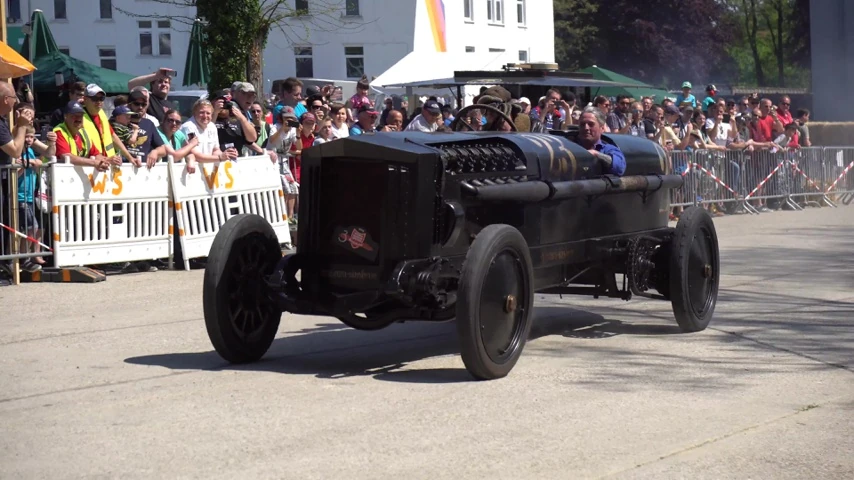
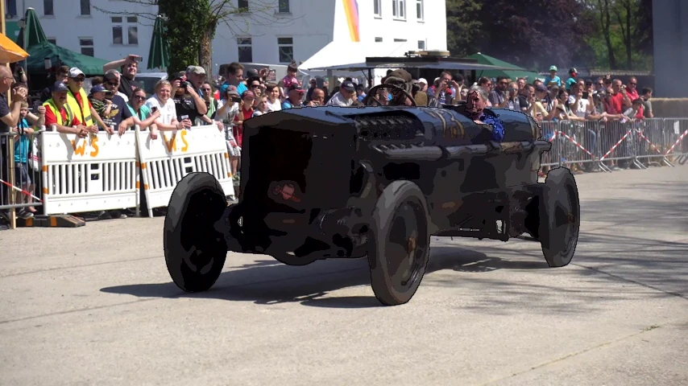

图像与视频工作台
用 SAM 2.1 跟踪同一个对象，提取掩膜，再给选区换一种风格。
在线演示使用预计算样例。上传自己的图像或视频可运行本地完整版。


原图卡通DAVIS · car-turn
DAVIS · car-turn · 原片
车轮内部的细结构
相同紧框下的 B 区辐条对照。白色为前景，黑色为背景。
单点平均 IoU0.553 → 0.775DAVIS 留出集 · 30 段视频、90 帧
B 区辐条覆盖率40.6% → 73.0%单个案例 · 局部解码器微调前后
整轮背景误填率36.3% → 47.9%单个案例 · 仅解码器与联合微调